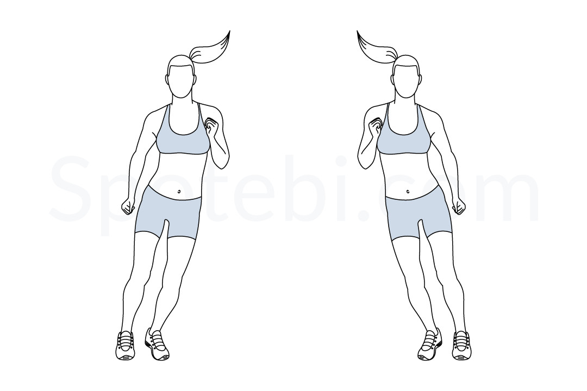
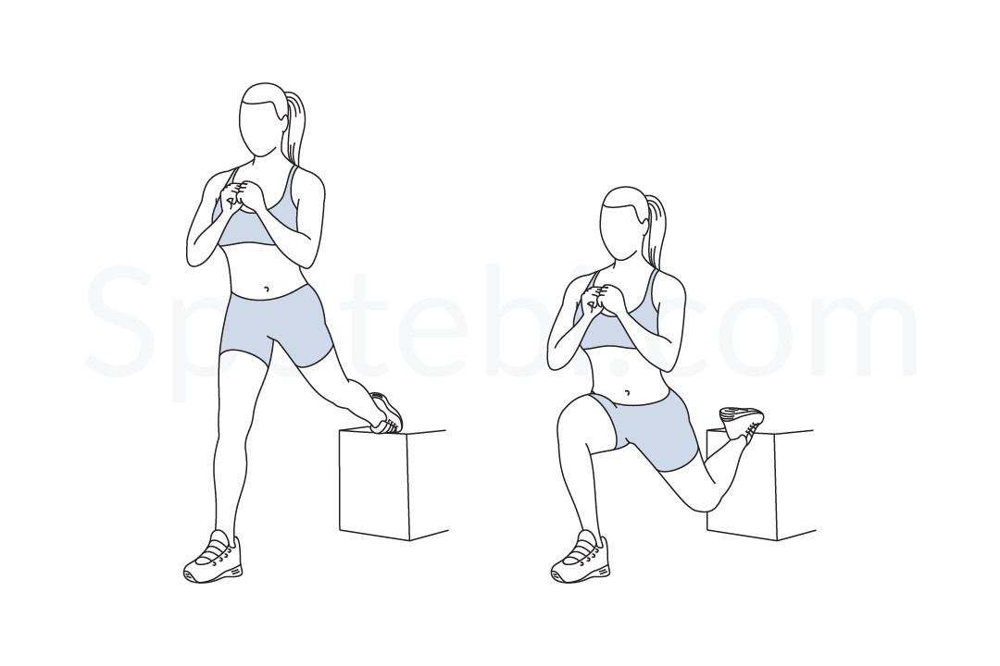
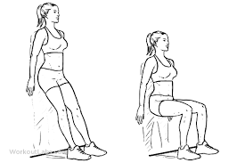
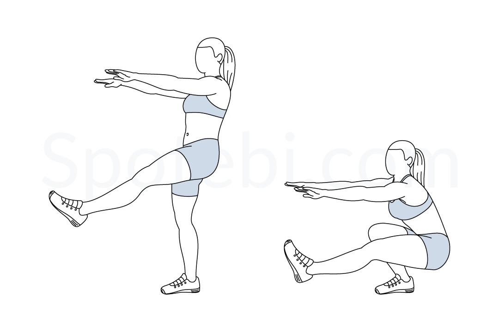
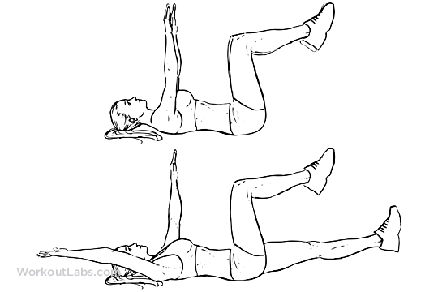
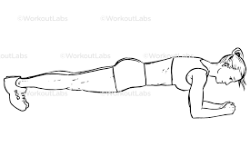
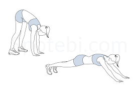

Living in Bend, Oregon means Mt. Bachelor is practically in your backyard. But a full day of skiing demands much more from your body than most people realize. Skiing requires a unique combination of lower-body strength, core stability, cardiovascular endurance, and quick reactive balance—all sustained for hours while navigating variable terrain at high speed. Without adequate preparation, skiers are vulnerable to a range of injuries, from minor muscle strains to serious ligament tears.
At Resolve Physical Therapy, we treat ski injuries throughout the winter season, and the overwhelming majority are preventable with proper conditioning. Below, we break down the most common ski injuries and provide seven exercises you can start doing today to build the strength and stability you need to enjoy the mountain safely all season long.
Common Ski Injuries
Understanding what can go wrong on the mountain helps motivate the right kind of preparation. The most common ski injuries we see in our Bend clinic include:
- ACL tears and MCL sprains. The knee is the most commonly injured joint in alpine skiing, accounting for roughly one-third of all ski injuries. The twisting and shearing forces during falls, especially the classic "phantom foot" mechanism, put enormous stress on the knee ligaments.
- Rotator cuff injuries and shoulder dislocations. Falls on an outstretched arm, pole-planting forces, and the impact of a high-speed crash can damage the shoulder joint. Rotator cuff strains and dislocations are common among both beginners and advanced skiers.
- Clavicle fractures. A direct fall onto the point of the shoulder or an outstretched hand can fracture the collarbone. This is one of the most common fractures in skiing and snowboarding.
- Quadriceps and hamstring strains. The sustained isometric contraction required for skiing posture can fatigue the thigh muscles, especially late in the day when form begins to break down.
Seven Exercises for Ski Season
These exercises target the muscle groups most critical for skiing performance and injury prevention. Perform them two to three times per week, ideally starting six to eight weeks before the season begins and continuing throughout the winter.
1. Lateral Ski Jumps

Lateral ski jumps build the explosive lateral power needed for carving turns and recovering from off-balance positions. Stand on one leg and jump laterally to land on the opposite leg, absorbing the landing through your hip and knee. Control the landing for a full second before jumping back. Start with small jumps and gradually increase distance and speed as your confidence grows.
Sets and reps: 3 sets of 10 jumps per side. Rest 60 seconds between sets.
2. Bulgarian Split Squats

The Bulgarian split squat is one of the most effective exercises for building single-leg strength in the quads, glutes, and hip stabilizers. Place your rear foot on a bench or step behind you and lower your front knee to approximately 90 degrees. Keep your torso upright and your front knee tracking over your toes. This exercise addresses the strength imbalances between legs that contribute to many ski injuries.
Sets and reps: 3 sets of 10 per leg. Add dumbbells when bodyweight becomes easy.
3. Wall Sits

Wall sits train the isometric endurance of the quadriceps, which is exactly the type of contraction demanded during sustained skiing. Slide your back down a wall until your thighs are parallel to the floor. Keep your knees at 90 degrees and your weight evenly distributed through your heels. Focus on maintaining a relaxed upper body and steady breathing.
Duration: 3 sets of 45 to 90 seconds. Progress by adding time or holding a weight plate against your chest.
4. Single-Leg Squats (Pistol Progressions)

Single-leg squats challenge balance, strength, and ankle mobility simultaneously—all of which transfer directly to skiing. If a full pistol squat is too difficult, start by squatting to a chair or box on one leg. Lower yourself slowly, keeping your weight through your heel and your knee aligned over your second toe. The descending (eccentric) phase is especially important for mimicking the muscle demands of skiing.
Sets and reps: 3 sets of 8 per leg. Reduce the box height as you progress.
5. Dead Bugs

Core stability is the foundation of ski performance. The dead bug teaches your deep core muscles to stabilize the spine while your limbs move independently, which is exactly what happens during skiing. Lie on your back with your arms reaching toward the ceiling and your hips and knees at 90 degrees. Slowly extend one arm overhead and the opposite leg toward the floor, keeping your lower back pressed firmly against the ground. Return to the start and repeat on the other side.
Sets and reps: 3 sets of 10 per side. Add a light dumbbell or strap a resistance band around your feet for added challenge.
6. Planks (Front and Side)

Planks develop the sustained core endurance needed to maintain a strong athletic posture throughout a full day of skiing. Hold a forearm plank with your body in a straight line from head to heels, squeezing your glutes and drawing your belly button toward your spine. Side planks target the obliques and hip stabilizers, which are critical for controlling rotational forces during turns.
Duration: Front plank: 3 sets of 30 to 60 seconds. Side plank: 3 sets of 30 seconds per side.
7. Inchworms

Inchworms are a full-body dynamic warm-up exercise that improves hamstring flexibility, shoulder stability, and core control. Stand with your feet hip-width apart, hinge forward at the hips, and walk your hands out to a push-up position. Pause briefly, then walk your hands back to your feet and stand up. This exercise is ideal as part of your pre-ski warm-up routine because it activates multiple muscle groups while improving mobility.
Sets and reps: 2 to 3 sets of 6 to 8 repetitions. Add a push-up at the bottom for an additional upper-body challenge.
Bonus Tip: Relax Your Toes
One of the most underappreciated skiing tips has nothing to do with strength. Many skiers grip with their toes inside their boots, especially on steeper terrain or in challenging conditions. This reflexive tension travels up the chain, tightening the calf, restricting ankle mobility, and pulling you out of a balanced athletic stance. The next time you notice tension in your skiing, consciously relax your toes. Wiggle them inside your boots. You will likely feel an immediate improvement in your balance and fluidity.
When to See a Physical Therapist
If you are coming back from a previous ski injury, dealing with knee pain during squats, or want a personalized pre-season conditioning program, a physical therapist can help. At Resolve Physical Therapy, we evaluate your movement patterns, identify areas of weakness or asymmetry, and build a program tailored to your specific goals and ski ability.
Schedule an evaluation at our Bend, Oregon clinic or call (541) 306-1099. No referral is needed in Oregon.
For more on how we help athletes recover and perform, visit our Running & Sports Rehabilitation page.